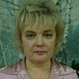
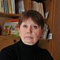
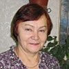

Дошкольное отделение школы № 1356
В 2015 году 28% первоклассников Школы № 1356 пришли из дошкольного отделения.
- Старокачаловская улица, 3Б
- Старокачаловская улица, 1Г
- Коктебельская улица, 2А
Воспитатели
Воспитатели, которых чаще всего благодарят родители (отзывы и профили сотрудников взяты с официального сайта школы):|
Логопед
Дубровская Светлана Николаевна
6 благодарностей |
Воспитатель
Николаева Лидия Анатольевна
4 благодарности |
Физ. рук.
Карпова Людмила Николаевна
3 благодарности |

Воспитатель
Литвина Елена Юрьевна
2 благодарности |
|

Воспитатель
Абрамова Елена Анатольевна
2 благодарности |
Воспитатель
Французова Наталья Викторовна
2 благодарности |
Воспитатель
Урюкова Юлия Николаевна
2 благодарности |

Воспитатель
Осипенко Надежда Алексеевна
2 благодарности |
|
Воспитатель
Павлюк Наталья Михайловна
1 благодарность |
Воспитатель
Сызганова Елена Геннадьевна
1 благодарность |
Воспитатель
Смолина Анна Юрьевна
1 благодарность |
Воспитатель
Ситникова Мария Михайловна
1 благодарность |
Отзывы
Данные собраны c официального сайта школы и через форму для отзывов.
Выражаю огромную благодарность всему педагогическому коллективу детского сада № 2037 за любовь к нашим детям! Мой ребёнок посещает логопедическую группу №10, где воспитателями работают чудесные педагоги Елена Юрьевна, Надежда Алексеевна и логопед Светлана Николаевна. Как многому они научили и продолжают учить моего ребёнка. И доброте, и отзывчивости и умению видеть и понимать того человека, который рядом с тобой! Также хочется написать об улыбках, с которыми встречают наших деток утром в группе наши воспитатели, день из хмурого и озабоченного сразу становится добрым и даже солнечным для нас, родителей. У них всегда есть время выслушать и помочь в решении любого вопроса и бабушку и маму и папу ребенка…Ребенок идет в сад с радостью, вечером просит забрать его попозже… Спасибо за Ваше бесконечное терпение, заботу о детях и за высокий профессионализм в вашей работе. Наши воспитатели наделены настоящим талантом любить и понимать. Огромная благодарность за праздники, за знания, которые приобретены у Вас в полном объёме. Спасибо за веселые улыбки наших детей, за добрую обстановку в группе, за сияющие глазки детей!! Спасибо просто за то, что любите наших детей! Отдельное спасибо администрации сада за организацию работы и воспитательного процесса. Я очень рада, что мой ребёнок попал именно к таким грамотным и добрым специалистам, любящим и знающим своё дело.
С благодарностью и уважением Павлова Светлана
С благодарностью и уважением Павлова Светлана
Хочу выразить огромную благодарность воспитателю 2 группы "Ладушки" Ситниковой Марии Михайловне и младшему воспитателю Наталье Викторовне. Замечательные, отзывчивые люди, профессионалы своего дела. Детки сделали много аппликаций, много поделок из пластилина, выучили огромное количество стихов и песен. Всегда готовы к диалогу с родителями и детьми, они добрые и отзывчивые. Спасибо вам большое за вашу работу. Дай бог вам здоровья и терпения на долгие года.
Выражаю искреннюю благодарность воспитателям 5-й группы Елене Геннадьевне и Анне Юрьевне за профессиональный подход к работе, чуткое отношение к детям. Спасибо за внимание, заботу, доброту и теплоту. Воспитательный процесс в группе прекрасно организован, дети с радостью идут в детский сад, с удовольствием занимаются и узнают много нового. От всей души благодарю за создание в группе дружелюбной и теплой атмосферы, благодаря которой дети считают детский сад своим вторым домом. Спасибо за то, что учите наших детей быть добрыми, открытыми, честными и заботливыми. Дети растут полноценными личностями, умеют дружить, уважать друг друга и взрослых. Желаю вам оставаться таким же профессионалами в работе, успехов, счастья и здоровья!
Родители 5-й группы детского сада 946
Родители 5-й группы детского сада 946
Хочу сказать большое спасибо воспитателям 8 группы Лидии Анатольевне и Светлане Николаевне за терпение, за любовь к своей работе и детям, за такие красивые и интересные праздники, которые они делают каждый год. Дети воспитываются в этой группе уже несколько лет и взрослеют с помощью сил и стараний наших воспитателей. Особо хочу отметить добрую атмосферу в группе и дружные отношения между собой. Светлана Николаевна и Лидия Анатольевна ежедневно проводят интересные занятия, дети знают много стихов, занимаются рисованием, лепкой, аппликацией. В детском саду есть музыкальные занятия, физкультурные уроки, бассейн. У всех преподавателей высокая квалификация и любовь к детям. Заведующая детским садом знает каждого ребенка и родителя.
СПАСИБО ЗА ВАШУ РАБОТУ!
СПАСИБО ЗА ВАШУ РАБОТУ!
Хочу поблагодарить воспитателей нашей группы №4 д/с 2038 Наталью Михайловну и Хаджар Валеховну! А также сказать спасибо нашей нянечке Зухре. Примите слова искренней благодарности за ваш профессионализм, чуткое отношение, внимание и заботу к нашим детям. Спасибо вам за ваше терпение, доброту, индивидуальный подход к каждому ребенку, за создание теплой и комфортной обстановки в группе. Под вашим чутким руководством наши дети смогли познать радость дружбы, самостоятельной деятельности и расширить свой кругозор.
Спасибо!
Спасибо!
Хочу сказать спасибо Карповой Людмиле Николаевне. За то, что она научила плавать моего ребёнка Архипову Наталию. Нашла к ней подход, вложила в неё все свои силы. Людмила Николаевна - проффесионал в своём деле. С заботой и вниманием относится к своим маленьким спортсменам. Благодаря ей мы участвуем в различных соревнованиях, и очень успешно. Она старается научить детей выносливости. Я рада, что у вас в саду работает такой замечательный тренер, тренер с большой буквы. Огромное спасибо и низкий поклон Вам, Людмила Николаевна, за то, что вы у нас есть.
Благодарность от нашей семьи педагогам нашей группы №7 ДС 946 - Елене Анатольевне и Юлии Николаевне, и, конечно же, Ирине Николаевне. Спасибо за ваше терпение, понимание и любовь к нашим детишкам. С вами у детей всегда хорошее настроение. Особая благодарность за интересные и творческие занятия, которые вы проводите с детьми.
Если вы нашли ошибку или неточность, пожалуйста, сообщите нам об этом.
Ученик, выпускник или родитель? Оставьте отзыв о детском саде.